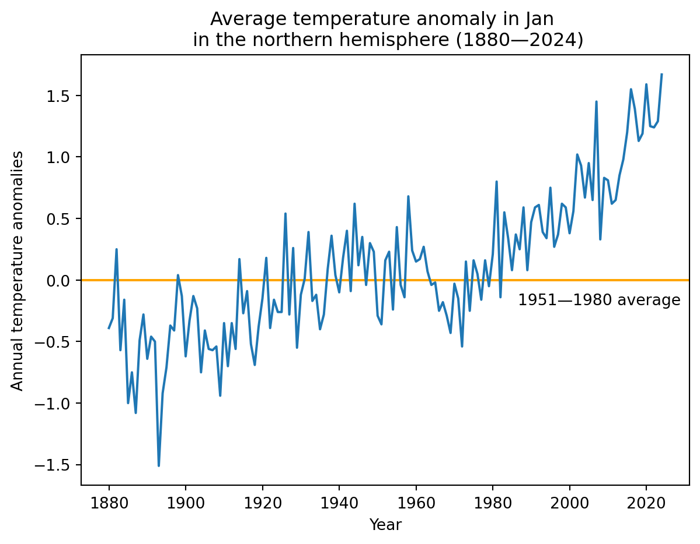
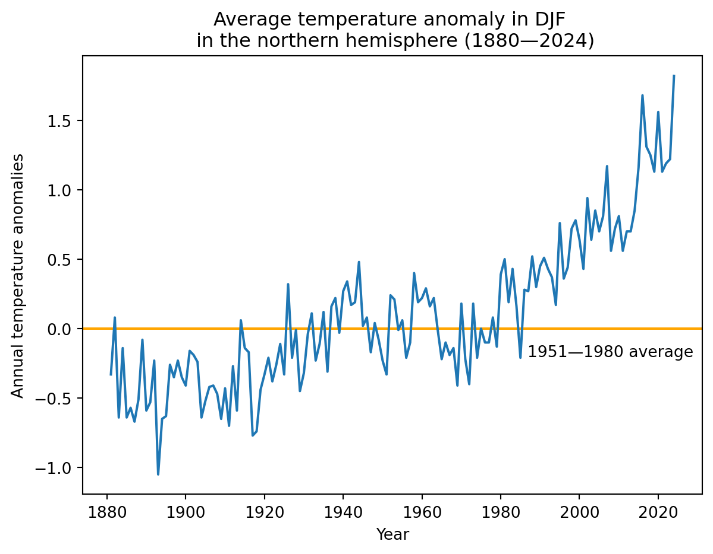
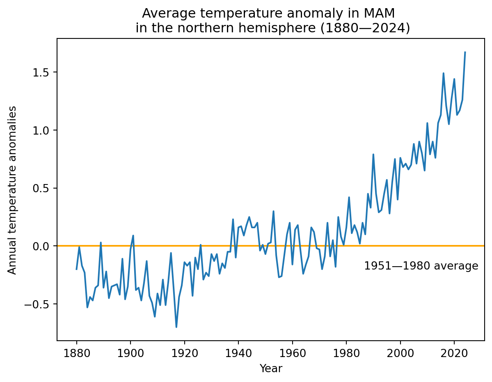
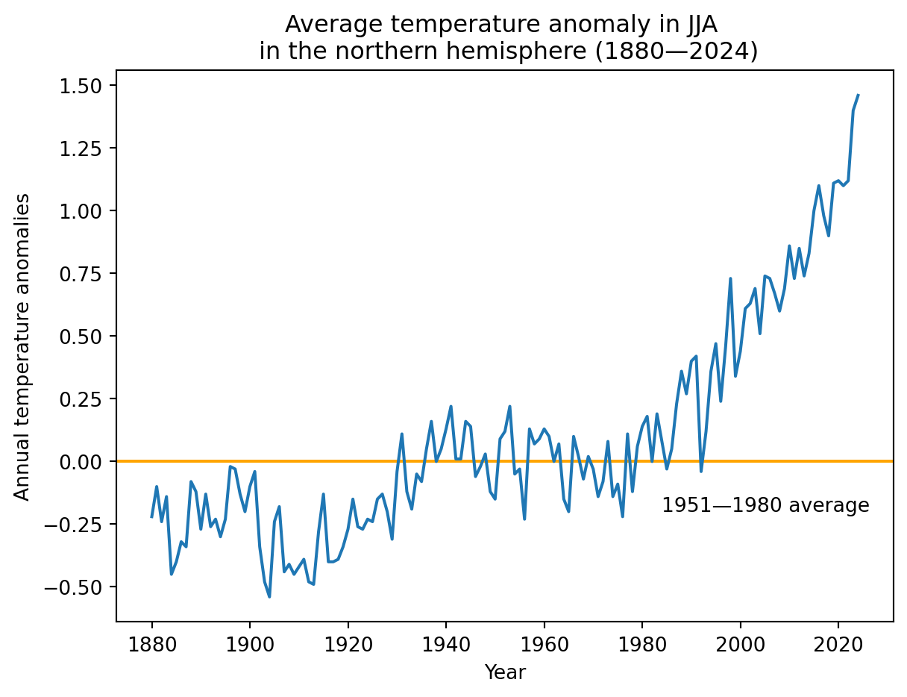
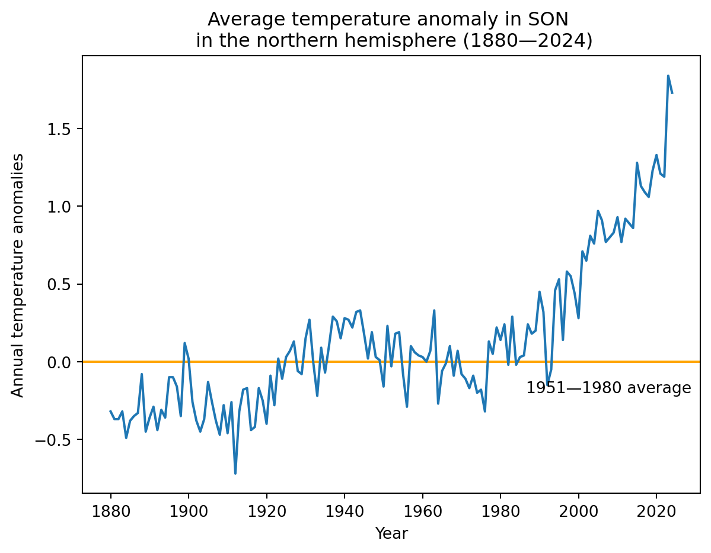
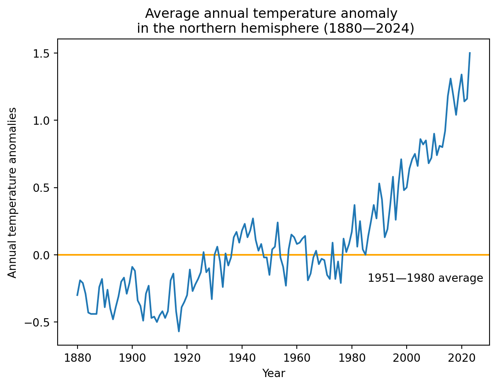

import pandas as pd
import matplotlib.pyplot as plt
# Download NASA's northern hemisphere temperature data
url = "https://data.giss.nasa.gov/gistemp/tabledata_v4/NH.Ts+dSST.csv"
# Attempt to download the data and handle potential errors
try:
df = pd.read_csv(url, skiprows=1, na_values="***")
except Exception as e:
print(f"Error downloading or reading the data: {e}")
df = None
# Check if the data was successfully loaded
if df is not None:
# Set year as the index
df = df.set_index("Year")
# Plot temperature anomaly for a specific month
def plot_monthly_temperature(month):
try:
fig, ax = plt.subplots()
ax.axhline(0, color="orange")
ax.annotate("1951—1980 average", xy=(0.66, -0.2), xycoords=("figure fraction", "data"))
df[month].plot(ax=ax)
ax.set_title(f"Average temperature anomaly in {month} \n in the northern hemisphere (1880—{df.index.max()})")
ax.set_ylabel("Annual temperature anomalies")
plt.show()
except KeyError:
print(f"No data for month {month}")
# Plot seasonal average temperature anomaly
def plot_seasonal_temperature(season):
try:
fig, ax = plt.subplots()
ax.axhline(0, color="orange")
ax.annotate("1951—1980 average", xy=(0.66, -0.2), xycoords=("figure fraction", "data"))
df[season].plot(ax=ax)
ax.set_title(f"Average temperature anomaly in {season} \n in the northern hemisphere (1880—{df.index.max()})")
ax.set_ylabel("Annual temperature anomalies")
plt.show()
except KeyError:
print(f"No data for season {season}")
# Plot annual average temperature anomaly
def plot_annual_temperature():
try:
fig, ax = plt.subplots()
ax.axhline(0, color="orange")
ax.annotate("1951—1980 average", xy=(0.66, -0.2), xycoords=("figure fraction", "data"))
df["J-D"].plot(ax=ax)
ax.set_title(f"Average annual temperature anomaly \n in the northern hemisphere (1880—{df.index.max()})")
ax.set_ylabel("Annual temperature anomalies")
plt.show()
except KeyError:
print("No annual data available")
# Generate plots
plot_monthly_temperature("Jan")
plot_seasonal_temperature("DJF") # Winter
plot_seasonal_temperature("MAM") # Spring
plot_seasonal_temperature("JJA") # Summer
plot_seasonal_temperature("SON") # Fall
plot_annual_temperature()
else:
print("Failed to load data. Please check your internet connection and try again.")




